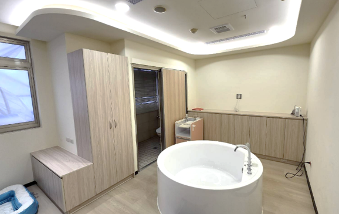
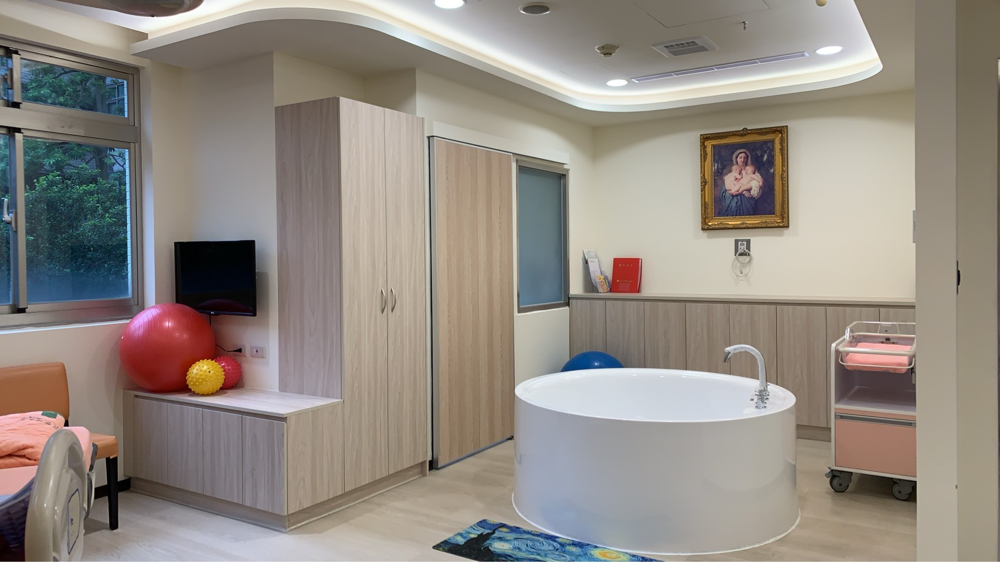
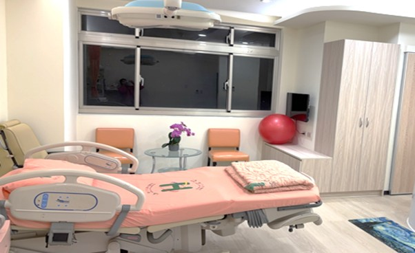

04
友善多元生產
Gentle & Inclusive Birth · Six-discipline Care
生產不是被處置，而是被陪伴。當媽媽身心放鬆，孩子也會用最安穩的姿勢來到世界。

13
04
六師共照 從一個人到一個團隊
婦產科醫師・助產師・護理師・個管師・心理師・小兒科醫師
Six Disciplines, One Birthing Team
過去的生產照護多以醫師為主要決策者；而「六師共照」是婦幼院區整合推動的照護模式──從產前銜接到產後，六大專業攜手組成團隊，以安全為基礎、以妳的需求為核心，陪伴妳做出每一項適切的選擇，織起一張溫柔而有力的守護網。
Six disciplines weave a single team around each birth — safety as the floor, the mother's voice as the compass.
婦產科醫師
助產師
護理師
個管師
心理師
小兒科醫師

水中生產
溫水浮力減輕腰背壓力，水的環抱讓緊張的身心自然放鬆。

嶄新家庭待產室
從燈光、聲音、氣味到家屬陪伴的每個細節，重新定義產房氛圍。
── 陪您穩穩走過每一段 ──
14